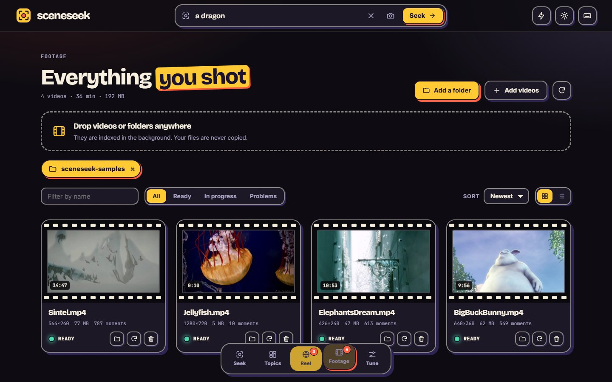

Describe it, find it
Plain English works. Scenes, objects, colours, places and actions are all fair game, and results appear as you type.
Free · private · works offline
You remember what happened, not which file or when. Type it, and Sceneseek takes you to the exact second. Every match is colour-coded, every frame stays on your computer.
Windows 10 and 11 · about 100 MB · free and open source
 71% Good5:16100% local
71% Good5:16100% local
How it works
Point Sceneseek at the folders where your videos live. It indexes them quietly in the background and your files stay exactly where they are.
Type “a red car at night” or “two people laughing”. Or drop in a picture and find footage that looks like it.
Click a frame and the video plays from just before the match. No scrubbing through hours of footage.
Features
Plain English works. Scenes, objects, colours, places and actions are all fair game, and results appear as you type.
Every frame wears its match percentage, from red through amber to green, with a heatmap of where each video matches.
dog + snow asks for both. beach -night leaves night shots out. Sharper results with no query language to learn.
The watch page lays the whole video out as a strip of real frames with match flags on top. Click or drag to scrub.
Keep the shots you need, add notes, and export a cut list for Premiere, DaVinci Resolve or Final Cut. Or take a CSV.
Sceneseek sorts your footage into topics on its own: faces, beaches, cars, text on screen and more. Browse without typing.
Paste a screenshot or drop a photo to find similar shots, or press Find similar on any frame.
In the screening room, search one long recording on its own and step through every take with the keyboard.
Save the full-resolution frame of any moment as a picture in one click, ready for a thumbnail or a slide.
Point at a frame to watch it silently before you open it, so you find the right one faster.
A command palette (Ctrl K) for everything, plus shortcuts to play, step through takes and keep a moment.
The AI runs on your computer. Your videos are never copied, uploaded or changed, and the app only talks to your own machine.
A closer look





Day or night
Dark for the edit bay, paper for the daylight. Both are built for long sessions, and both work on a small window or a phone-sized layout.

Who it is for
Pull the right B-roll or the take you half remember, then send the cut list straight to your timeline.
Go through interviews, field footage and recordings. Your material stays on your machine.
Find the part of a recorded lecture or demo where something was shown.
Find “the birthday where grandpa blew out the candles” across years of phone videos.
Search training videos, product demos and event footage without a cloud subscription.
It is open source and the code is small and readable. Fork it and make it yours.
Download
Unzip, run Sceneseek.exe, and add a folder. The first launch downloads the search model once (about 150 MB). After that it works fully offline.
Windows 10 or 11, 64-bit · 8 GB RAM recommended · no graphics card needed
Sceneseek is new and not code-signed yet, so Windows SmartScreen may say it does not recognise the app. Choose More info, then Run anyway. You can check the download against the published checksum, and the full source code is on GitHub.
The SHA-256 checksum is published next to the file on the release page. In PowerShell, Get-FileHash Sceneseek-*.zip prints the one for your copy.
The app is plain Python. With Python 3.10 or newer, run pip install -r requirements.txt and python main.py. Full steps are in the README.

Questions
Yes. Sceneseek is free and open source under the MIT licence. There is no account, subscription or ads.
No. Indexing and searching happen on your computer, and the app only answers requests from your own machine. The one download is the search model, once, on first launch.
It matches what things look like: scenes, objects, colours, places and actions. It does not listen to speech, so it cannot search by what people say, and it is not good at reading small text on screen. Very short moments can be missed at the default setting; you can raise the detail in Tune.
They show how closely a frame matches your words compared with the rest of your footage, not a guarantee. Treat green as “very likely”, amber as “worth a look”, and red as “probably not”.
It depends on your processor. On our test PC a 10 minute video took about a minute and a half, so an hour of footage takes around ten minutes. Indexing runs in the background and finished videos are searchable straight away. Each video is only processed once.
MP4, MOV, MKV, AVI, WebM, WMV and others can be indexed and searched. The built-in player plays what your system supports; for anything else, the Open button hands the file to your usual player.
The export is a standard CMX3600 edit decision list, which Premiere Pro, DaVinci Resolve and Final Cut Pro can import. Each kept moment becomes a six second cut with your note as a comment. Relink the clips to your media after importing.
Very little: about 1 KB per indexed moment, so a thousand hours of footage stays well under a few GB including thumbnails. Your videos are not copied.
Yes, the MIT licence allows commercial use. The AI model is OpenAI's open CLIP model, also MIT licensed.